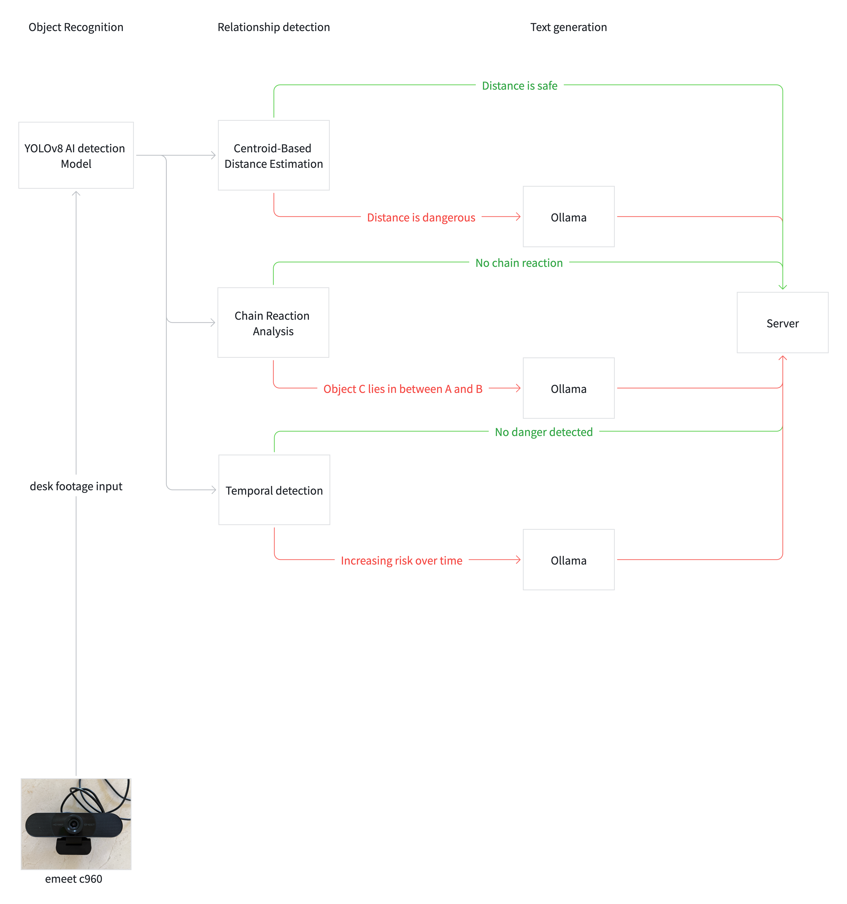

Desk Talk
Work in progress — vision and a local LLM so risky desk layouts show up as group-chat banter, not alarms.
YOLOv8 tracks objects; relationship passes (zones, edges, chains, time) flag tension; Ollama writes in-character lines for Monty, Glug, and the rest. Flask serves the camera and the chat.
Two cameras. One desk.
A living conversation.
The problem
After school or away from home, many people hit a stretch where no one is checking in. Habits slip less from not knowing better than from missing immediate feedback — the cup near the laptop, cables in the way, eating at the desk.
Reminder apps get disabled; ambient cues often land better than another ping. This project treats the desk as a small ecosystem: vision notices how objects relate to each other, and a group chat turns that into dialogue so the scene registers without feeling like surveillance.
Approach
Observe. One or two webcams; YOLOv8 keeps boxes and classes on the things that matter.
Relate. Edge proximity, danger zones around laptops and keyboards, chain-style “something between A and B,” and light temporal tracking — not a single distance threshold.
Converse. When something’s wrong, a local LLM (Ollama) writes the line; objects stay in voice.
Nudge. The tone is unease and humor, not orders — enough to look down and fix the layout.
“I feel a little tense… that cup is getting closer.” — Monty
Hardware
eMeet C960 on a tripod in front of the desk, angled down. 1080p, ~90° field of view, USB into OpenCV. The diagram below is the intended layout — lens covering the whole surface.
Camera Model
1080p Full HD webcam with built-in dual microphones, wide-angle glass lens, and automatic low-light correction. Plug-and-play USB — no drivers needed. Compatible with OpenCV's VideoCapture interface out of the box.
Placement
Mounted on a tripod stand directly in front of the desk, angled slightly downward. The 90° wide-angle lens covers the full desk surface from edge to edge — a single camera captures all objects and their spatial relationships.
System
Frames go through YOLOv8, then relationship passes — centroid distance, chain paths, temporal drift. When everything’s fine, the server updates quietly. When it isn’t, Ollama drafts the line and the chat moves.

How danger is detected
After YOLOv8 labels each object, the backend combines several relationship passes. Any one of them can flag a situation before the chat sees it — the UI above configures only the first kind; the rest are computed from geometry and history.
- Danger zones — Each class (laptop, cup, phone, …) can carry an expanded margin in pixels. If another object’s box enters that padded region, it counts as a spatial conflict — what you tune in Safety Rules.
- Centroid distance — Pairs of objects are compared by center-to-center distance against safe thresholds so “too close” doesn’t depend only on overlapping boxes.
- Chain / sandwich — The pipeline checks whether a third object sits between two others (for example, something lined up between a drink and the keyboard), which often predicts knock-over or spill paths.
- Temporal drift — Short-term history catches risks that build slowly: objects creeping closer frame after frame, or unstable layouts that worsen over a few seconds.
When a pass says “safe,” the server updates state quietly. When any pass says “risky,” the same frame can be sent to Ollama for an in-character line in group chat.
Cast
Seven voices mapped to desk objects — each with a habit lane (hydration, posture, screen time, etc.) and a way of complaining.
Monty — laptop / keyboard. Anxious center; spills and heat.
Glug — cup. Oblivious; hydration coach.
Munch — snack. Hedonist; crumbs vs keyboard.
Sheets — paper. Fragile; deadlines and stains.
Zip — cable. Chaos agent; organization nudges.
Surge — power bank. Heavy and unaware.
Buzz — phone. Attention hog; screen discipline.
How they relate
Sample pairs the stack cares about — risk is staged for dialogue, not a siren.
| Object A | Object B | Risk | Description | |
|---|---|---|---|---|
| Cup | → | Laptop | Critical | Liquid spill — existential threat |
| Snack | → | Laptop | High | Crumb contamination on keyboard |
| Cable | → | Cup | Critical | Knock-over trigger |
| Power Bank | → | Laptop | High | Pressure and heat damage |
| Cup | → | Paper | High | Water damage to documents |
| Cable | → | Phone | Medium | Pull-off-desk risk |
| Snack | → | Paper | Medium | Oil and grease stains |
| Phone | → | Laptop | Low | Competing for user attention |
Gallery
Placeholder frames from development — arrows to step, or let it advance on its own.